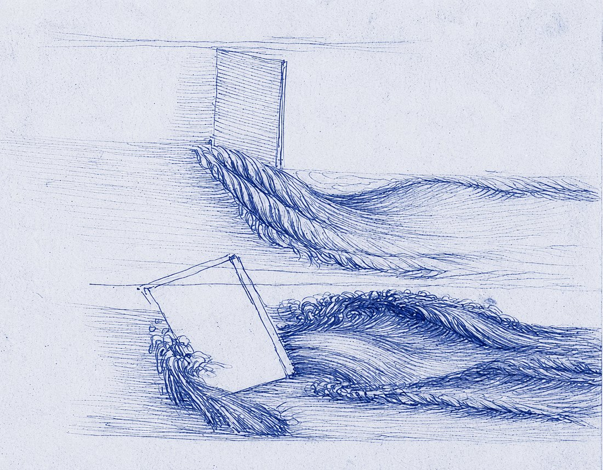
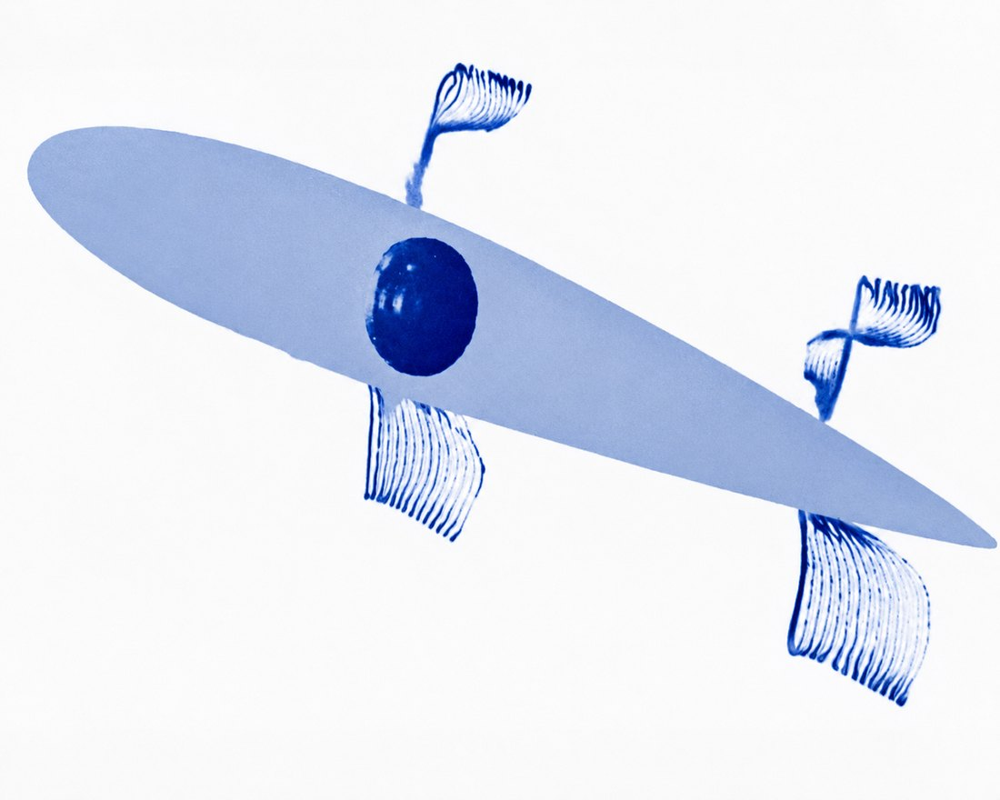
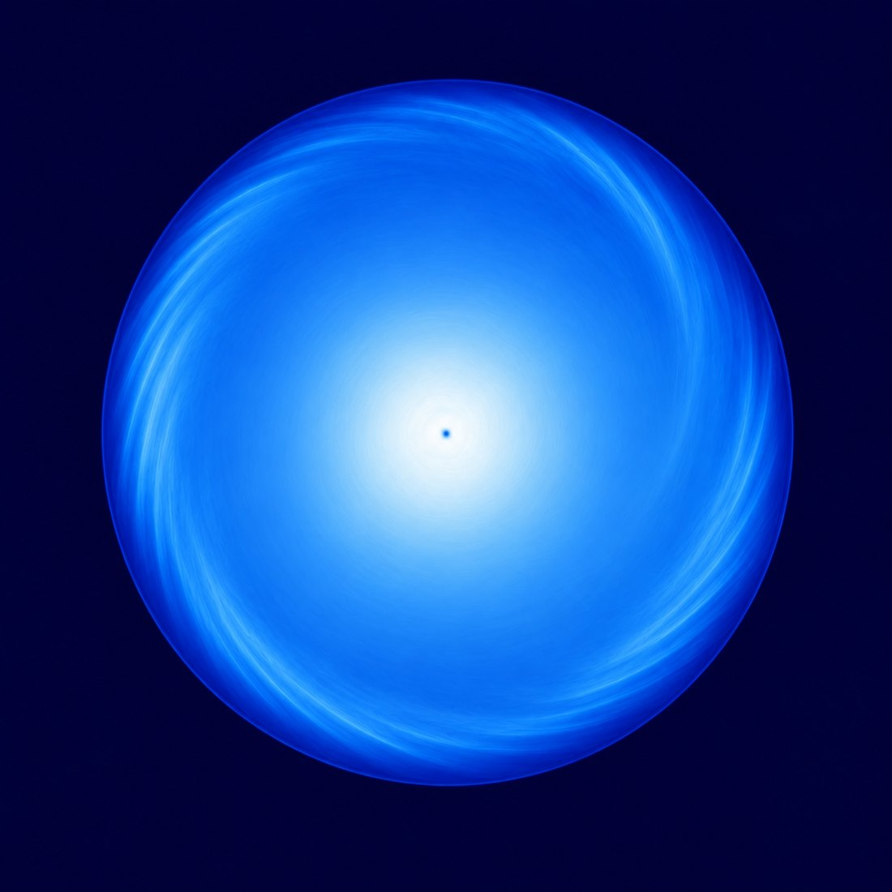

Leonardo da Vinci Award
Presented at each ISFV to a distinguished scientist for outstanding contributions to the field of flow visualization.
Recognition
Following ISFV tradition, awards recognize outstanding work in flow visualization. Recipients are announced during the symposium.
Presented at each ISFV to a distinguished scientist for outstanding contributions to the field of flow visualization.
A long-standing ISFV award honoring excellent contributions to flow visualization.
Newly established for ISFV22, the Carlomagno Award honors young researchers — up to ten years beyond their PhD — who have already made seminal contributions to the art of flow visualization.
Pioneers of flow visualization
Each award celebrates a figure who shaped the art and science of making fluid flows visible. Below, an artistic representation of flow visualization associated with each, with a brief note on their contribution.

Leonardo da Vinci drew some of history's most beautiful sketches of moving water. For him, drawing and experimentation were an essential mechanism of thought about natural fluid flows, yielding pioneering observations of turbulence, vortices and free-surface dynamics centuries before modern fluid mechanics existed.

Professor Tatsuo Asanuma founded this symposium series and organised the first ISFV. A leader in internal-combustion-engine and thermal-fluid engineering, he served as president of both the Japan Society for Aeronautical and Space Sciences and the Flow Visualization Society of Japan, helping establish flow visualization as a discipline.

Professor Giovanni Maria Carlomagno pioneered infrared thermography as a quantitative, non-intrusive tool for surface flow visualization and convective heat-transfer measurement. His heated-thin-foil technique reshaped the field, enabling visual mapping of transition, separation and vortical structures across aerospace and industrial flows.